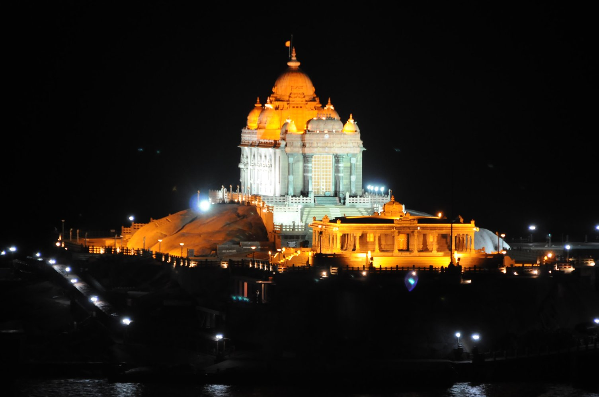

Thirparappu Falls: Located at a distance of about 55 kilometres from Kanyakumari, the cascading waters of the Tirparappu Falls make up for an enchanting sight.
This waterfall is a manmade one and falls from a height of 50 feet.
The water collects in a quaint pool below which is an ideal place to frolic around, especially for children.
The falls are surrounded by thick green foliage and indigenous fauna, which make it a nature lover's paradise.
Weather : 26° C
Timings : 7:00 AM - 6:00 PM
Time Required : 2-3 hrs
Entry Fee : INR 2 per person
Camera : INR 5
Activities : Swimming, Photography and Boating

Vivekananda Rock Memorial: The magnificent Vivekananda Rock Memorial is located on a small island off Kanyakumari.
It has the picturesque Indian Ocean in its backdrop.
It is situated on one of the two adjacent rocks projecting out of the Lakshadweep Sea and comprises of the 'Shripada Mandapam' and the 'Vivekananda Mandapam'.
There is a 'Dhyana Mandapam' located beside to memorial, which serves as the meditation hall for the visitors to meditate.
Weather : 25° C
Timings : 7:00 AM - 5:00 PM
Time Required : 1-2 hrs
Entry Fee : INR 10 Still Camera : INR 10 Video Camera : INR 50